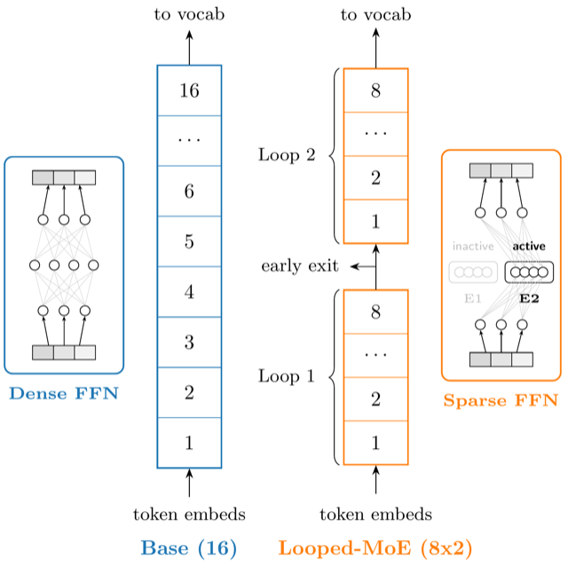
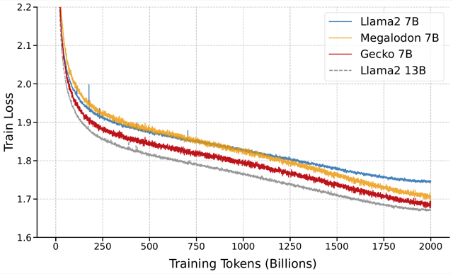
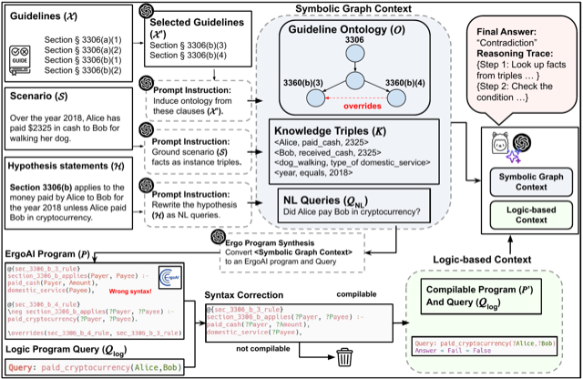
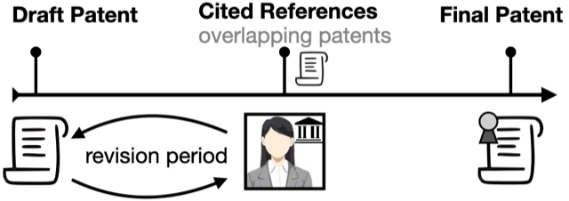

Ryan Lee
Ryan LeePublications
Also on Google Scholar. * denotes equal contribution.
-

Sparse Layers are Critical to Scaling Looped Language Models -

Gecko: An Efficient Neural Architecture Inherently Processing Sequences with Arbitrary Lengths -

LOGicalThought: Logic-Based Ontological Grounding of LLMs for High-Assurance Reasoning -

PatentEdits: Framing Patent Novelty as Textual Entailment